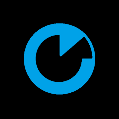
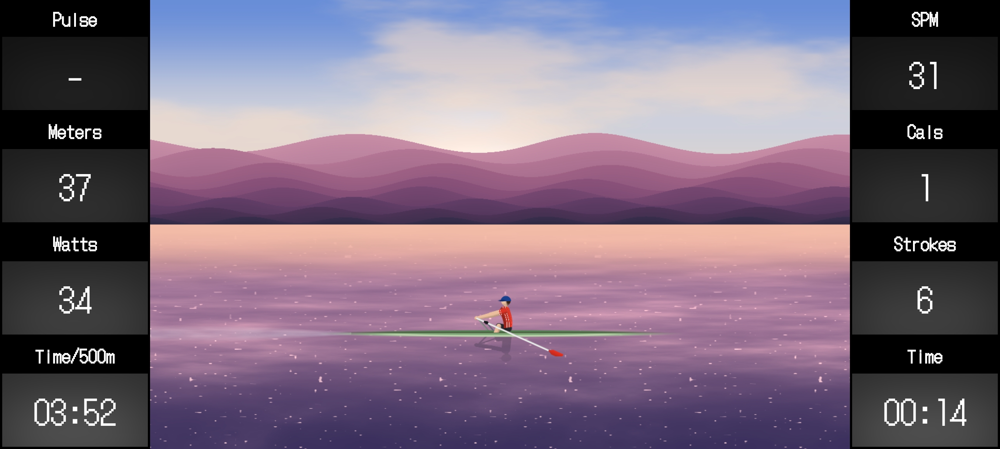

Track every stroke. Own every session.
A Bluetooth bridge between your Xebex rower and the web — built end-to-end as a study of how far you can push App Inventor, WebGL, and FTMS together.


What it does
BLE auto-connect
Scans for Xebex rowers and pairs automatically — no setup menus.
Live FTMS metrics
SPM, /500m pace, watts, HR, distance, calories — refreshed every 500 ms.
Auto-save sessions
Workouts upload on session end, or store locally when offline.
Drop & reconnect
BLE drops are detected and re-paired without losing the session.
History dashboard
Every stroke, sampled at 1 Hz, reviewable per workout.
Xebex Air only
Targeted at the FTMS profile shipped on Xebex Air rowers.
Stack & engineering
BLE + FTMS parsing
The Android app subscribes to the Xebex FTMS characteristic and forwards 20-byte
packets to the WebView. Multi-byte fields use the rower's quirky
high * 255 + low convention (not standard little-endian), reverse-engineered
from capture sessions.
Hybrid architecture
MIT App Inventor handles native BLE (the one thing it does well); a WebView running
vanilla JS handles UI, animation, session logic, and HTTPS upload. The bridge is a
single JSON channel via setWebViewString / RunJavaScript.
WebGL rowing scene
A single-pass GLSL fragment shader renders the rower, boat, water, wake, fish, sky cycle, and weather — animated procedurally from SPM and pace. No textures, no assets, ~600 lines of shader code.
Event-driven state machine
Three phases — IDLE / ACTIVE / DONE — with explicit transitions, a 5 s
watchdog for inactivity, frozen elapsed time on stop, and detection of rower
counter resets that roll prior peaks into session offsets.
Backend on PostgreSQL + PostgREST
A PostgreSQL schema with SECURITY DEFINER functions exposed as a REST
API by PostgREST. The app uploads the compressed workout payload (1 Hz samples,
~3600 rows for 1 h) to /rpc/save_workout and authenticates with a
token bound to the user.
No-build deployment
A PowerShell script inlines all CSS and JS into a single app.html,
writes UTF-8 without BOM, and ships it via SCP. No bundler, no
node_modules, no package.json — the whole pipeline is
~80 lines.
Why this exists
Not a startup, not a product pitch — a personal project, built because the integration itself was the interesting problem.
The challenge was the technical assembly: making MIT App Inventor talk to a Bluetooth rower, pipe FTMS bytes into a WebView, render them through a procedural WebGL shader, persist sessions through PostgREST into PostgreSQL, and deploy the whole thing with a PowerShell one-liner. Six unrelated technologies, none of which were designed to work together.
That's the skill I wanted to exercise: making disparate pieces fit and ship a complete system. Not inventing anything, not picking the "right" stack — just bending what was available into something that works end-to-end. The rower was the excuse. The integration was the project.